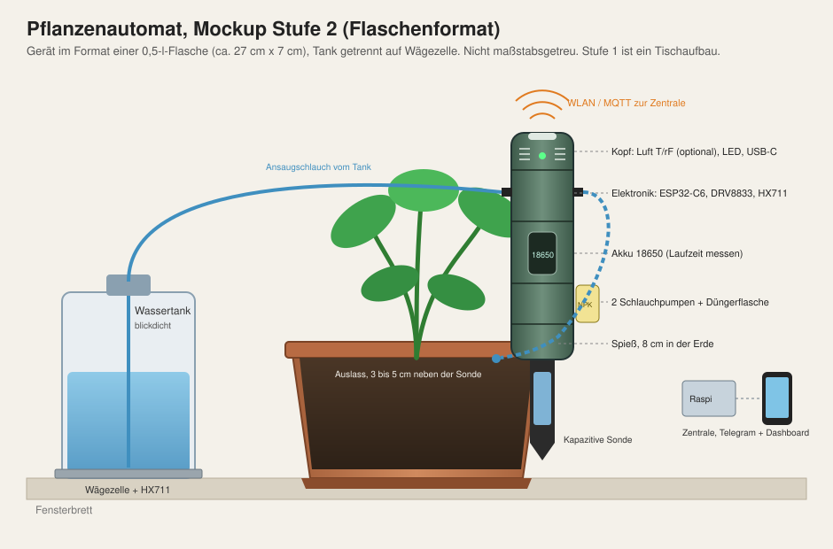

Pflanzenautomat, Mockup Stufe 2 (Flaschenformat)
Gerät im Format einer 0,5-l-Flasche, steckt als Spieß am Topfrand. Zwei Schlauchpumpen im Gerät saugen Wasser aus einem getrennten Tank auf einer Wägezelle und Dünger aus einer kleinen Flasche am Gerät. Stufe 1 ist ein Tischaufbau.

| Abschnitt | Inhalt | Höhe (ca.) |
|---|---|---|
| Kopf | Luftsensor SHT40 (optional), Status-LED, USB-C | 40 mm |
| Elektronik | ESP32-C6-Board, DRV8833, HX711, Schlauchanschlüsse seitlich | 60 mm |
| Akku | 18650 Li-Ion im Halter | 70 mm |
| Pumpen | 2 Schlauchpumpen (Wasser, Dünger), Düngerflasche außen angeclipst | 50 mm |
| Spieß | Kapazitive Sonde (TLC555 oder Markenmodul), Kante versiegelt | 80 mm in der Erde |